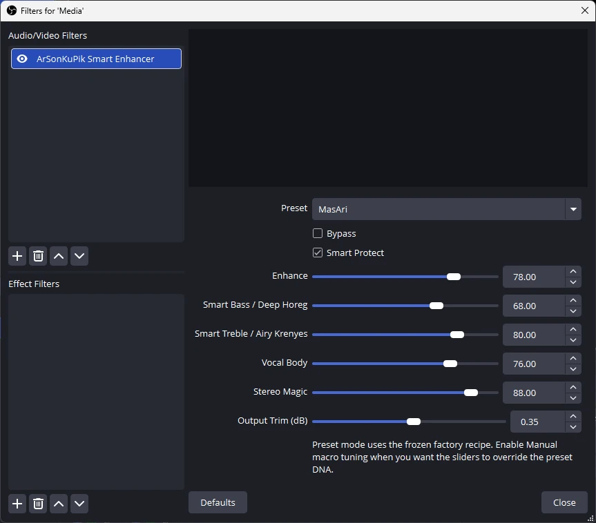

Louder perception
Focuses on practical loudness benefit that feels more satisfying to listeners, instead of relying on obviously harsh processing.
ArSonKuPik OBS Audio Enhancer is built to improve the listening experience, not just expose technical controls. It helps music, media playback, and spoken content feel more polished, more alive, and more satisfying in day-to-day OBS use.

ArSonKuPik is designed around perceived user benefit: when the filter is turned on, the result should feel better immediately.
Focuses on practical loudness benefit that feels more satisfying to listeners, instead of relying on obviously harsh processing.
Improves day-to-day playback with a cleaner, more premium presentation for music, media, and spoken content.
Aims for a wider and more alive presentation while respecting center focus and avoiding a phasey sound.
Preset-first controls help users get a useful result quickly without getting lost in an overbuilt interface.
Whether you want a better media playback experience, cleaner spoken audio, or an easy enhancement layer for your OBS workflow, ArSonKuPik is packaged for straightforward adoption with both simple and advanced installation paths.
Download the latest setup `.exe`, close OBS, run the installer, and reopen OBS.
Extract the ZIP and copy the plugin into `C:\ProgramData\obs-studio\plugins\`.
Extract the `.tar.gz` release package and install it into your OBS plugin path.